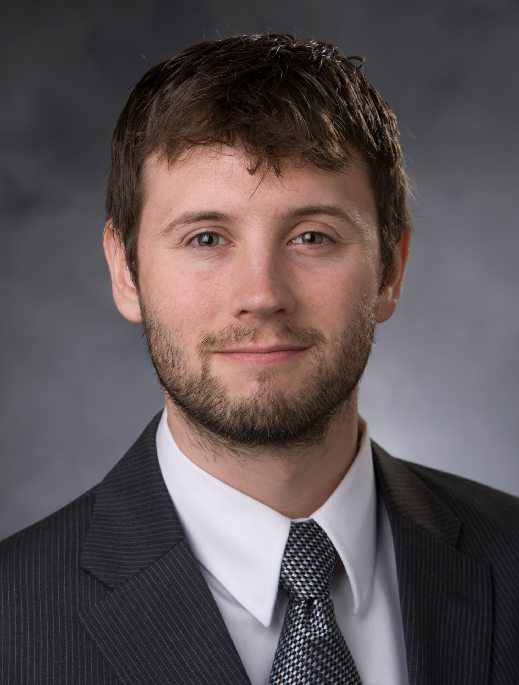

Alumni
PhD Graduates
|
Marthony Robins is a medical physics resident at Duke University, where he performs standard diagnostic imaging assessment of x-ray projection, computed tomography (CT), fluoroscopy, magnetic resonance imaging, ultrasound, mammography, and nuclear medicine imaging systems. Marthony’s doctoral project involved the development, validation, and dissemination new phantoms, image databases and assessment tools that are appropriate for ground truth lesion characterization in the context of modern X-ray CT systems. Marthony is a sports enthusiast from The Bahamas, who enjoys basketball, flag football, and sprinting. |

 |
|Google Scholar | ResearchGate | Website | Justin Solomon is a practicing medical physicist in the Clinical Imaging Physics Group at Duke University Medical Center and faculty of the Duke University Medical Physics program. He also works closely with investigators from the Carl E. Ravin Advanced Imaging Laboratories to translate imaging research into the clinical practice of medical physics. His expertise is in x-ray computed tomography imaging and image quality assessment. |
| Scholars@Duke | Dr. Saunders is Research Director, Payment and Delivery Reform at Duke-Margolis. In this role, he manages the Center's portfolio for payment and delivery reform initiatives, including bringing together faculty from across the University for developing the strategic vision in this area. He also leads specific projects in digital health technologies, evaluation of new payment policies, and federal physician payment reforms. Prior to joining Duke-Margolis, Dr. Saunders was a Senior Director and then Senior Advisor to the President of the National Quality Forum, where he managed a large federally-funded project that provided recommendations on more than 200 quality measures for 20 different federal programs in a period of two months. As Senior Advisor, he directed special projects on topics including data, payment reform, systems engineering, and future of healthcare quality measurement. There, he authored targeted communications to translate the organization’s technical work for a broad audience, including journal perspectives, white papers, and blogs and supported the development of new funding opportunities, including developing relationships with foundations and authoring concept papers and proposals. He was previously Senior Program Officer at the Institute of Medicine and managed health care legislative affairs for Representative Rush D. Holt. He has previously served as an adjunct professorial lecturer at American University and the Duke University Program in Medical Physics. He earned his B.S. in Physics from the College of William and Mary and completed his PhD in physics and a Postdoctoral Fellowship in Medical Physics at Duke University. He served on the Duke University Board of Trustees from 2005-2007. |
Master's Degree Graduates
|Google Scholar | ResearchGate | Website | Justin Solomon, PhD is a practicing medical physicist in the Clinical Imaging Physics Group at Duke University Medical Center and faculty of the Duke University Medical Physics program. He also works closely with investigators from the Carl E. Ravin Advanced Imaging Laboratories to translate imaging research into the clinical practice of medical physics. His expertise is in x-ray computed tomography imaging and image quality assessment. |
Former Postdoctoral Research Associate
| Scholars@Duke | Dr. Saunders is Research Director, Payment and Delivery Reform at Duke-Margolis. In this role, he manages the Center's portfolio for payment and delivery reform initiatives, including bringing together faculty from across the University for developing the strategic vision in this area. He also leads specific projects in digital health technologies, evaluation of new payment policies, and federal physician payment reforms. Prior to joining Duke-Margolis, Dr. Saunders was a Senior Director and then Senior Advisor to the President of the National Quality Forum, where he managed a large federally-funded project that provided recommendations on more than 200 quality measures for 20 different federal programs in a period of two months. As Senior Advisor, he directed special projects on topics including data, payment reform, systems engineering, and future of healthcare quality measurement. There, he authored targeted communications to translate the organization’s technical work for a broad audience, including journal perspectives, white papers, and blogs and supported the development of new funding opportunities, including developing relationships with foundations and authoring concept papers and proposals. He was previously Senior Program Officer at the Institute of Medicine and managed health care legislative affairs for Representative Rush D. Holt. He has previously served as an adjunct professorial lecturer at American University and the Duke University Program in Medical Physics. He earned his B.S. in Physics from the College of William and Mary and completed his PhD in physics and a Postdoctoral Fellowship in Medical Physics at Duke University. He served on the Duke University Board of Trustees from 2005-2007. |